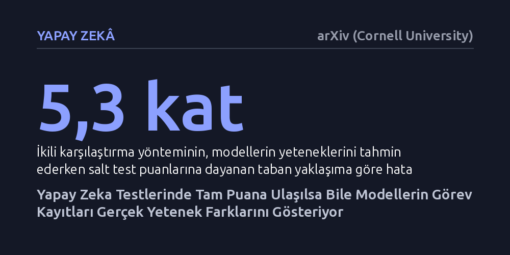

YAPAY-ZEKA · arXiv (Cornell University) · 2026-10-18
Araştırmacılar, yapay zeka modellerinin tam puan alarak doyurduğu kıyaslama testlerindeki çözüm kayıtlarının, modellerin farklı yeteneklerini tahmin edip edemeyeceğini araştırdı. İkili karşılaştırma yöntemiyle bu kayıtları incelemenin, modellerin yetenek tahmin hatasını 5,3 kat azalttığı ve kritik sinyalleri koruduğu bulundu.
Mevcut yapay zeka testleri tüm modellerin tam puan almasıyla işlevsizleşse bile, modellerin soruları adım adım nasıl çözdüğüne bakarak güvenlik ve yetenek değerlendirmesini yeni testler üretmeden sürdürmek mümkündür.

Yapay zeka modelleri öylesine hızlı gelişiyor ki, onları değerlendirmek için hazırlanan standart sınavlar ve kıyaslama testleri hızla doygunluğa ulaşıyor. Birkaç farklı model aynı testte neredeyse tüm soruları doğru yanıtlayıp tam puana yaklaştığında, o test artık modeller arasındaki farkı ölçemez hale geliyor. Bu durum, özellikle sınır modellerin güvenliğini denetlemek ve risk politikalarını belirlemek isteyen kurumlar için ciddi bir kör nokta yaratıyor. Modellerin hepsi sınavdan tam puan aldığında, hangisinin daha güvenilir ya da daha yetenekli olduğunu sadece puan tablosuna bakarak anlamak imkansızlaşıyor.
Oysa bir yapay zekanın bir testi çözmesi, yalnızca nihai bir doğru-yanlış sonucundan ibaret değildir. Modelin soruyu yanıtlarken ürettiği tam işlem kaydı—yani akıl yürütme basamakları, kullandığı araçlar ve takip ettiği mantık dizilimi—puan tablosunun çöpe attığı devasa bir bilgi havuzudur. Araştırmacılar tam bu noktada şu soruyu gündeme getiriyor: Bir test artık modelleri birbirinden ayıramayacak kadar eskidiğinde bile, modellerin doğru çözümler üretirken arkalarında bıraktıkları işlem kayıtları onların gerçek kapasitelerini ölçmeye devam edebilir mi?
Araştırma ekibi bu soruyu yanıtlamak için geçmişte yayımlanmış yapay zeka modelleri ve kıyaslama testlerinin verilerini kullanarak geriye dönük bir doygunluk simülasyonu kurguladı. Bu simülasyonda, modellerin puan bazında zaten tavan yaptığı testler yapay olarak doygun kabul edildi. Ardından, araştırmacılar bu doygun testlerde modellerin yalnızca doğru çözdüğü görevlere ait işlem kayıtlarını ayırdı. Temel amaç, bu başarılı çözüm kayıtlarına bakan farklı değerlendirme yöntemlerinin, modellerin henüz çözülmemiş ve daha zorlu testlerdeki yeteneklerini ne kadar isabetle öngörebildiğini sınamaktı.
Modellerin işlem kayıtlarından anlam çıkarmak için güncel ve yaygın yaklaşımlar karşılaştırıldı. İki modelin aynı soruyu çözme kaydını yan yana koyup hangisinin daha nitelikli olduğunu kıyaslayan ikili hakemlik, tek bir kaydı bağımsız olarak puanlayan mutlak değerlendirme ve kayıtların biçimsel özelliklerini ya da anlamsal matematiksel temsillerini kullanan otomatik tahmin modelleri deneysel olarak incelendi.
Elde edilen bulgular, test puanları tamamen eşitlense bile çözüm kayıtlarının zengin bir yetenek sinyali taşımaya devam ettiğini gösterdi. Araştırmacılar, makalede belirttikleri üzere "doygun kayıtlar, test doğruluğunun ötesinde yetenek bilgisi barındırmaktadır." Değerlendirilen yöntemler arasında en başarılı yaklaşım ikili karşılaştırma yöntemi oldu. Bu yöntem, sadece doymuş test puanlarına dayanan standart taban yaklaşıma kıyasla tahmin hatasını 5,3 kat azalttı. Yani iki model de aynı soruyu doğru çözmüş olsa bile, çözüm yollarını karşılaştırmak daha gelişmiş olan modeli güvenle ayırt etmeyi sağladı.
Çalışma ayrıca bu yetenek sinyalinin işlem kaydının tamamına dağıldığını, ancak özellikle iki kritik kanalda yoğunlaştığını ortaya koydu: modelin adım adım akıl yürütme süreçleri ve harici araçları çağırma biçimleri. Buna karşın araştırmacılar önemli bir açığı da tespit etti: Bu tahmin protokolleri mimari değişimlerde her zaman genellenemiyor. Örneğin yöntemler, 2025'in başında tanıtılan ilk akıl yürütme modellerinin kapasitesini olması gerekenden daha düşük tahmin etti.
Bu sonuçlar, yapay zeka alanında sürekli sıfırdan çok pahalı yeni testler üretme zorunluluğunu hafifletebilecek pratik bir yol sunuyor. Bir testte modellerin tam puan alması o testin tamamen işlevsiz kaldığı anlamına gelmiyor; doğru çözümlerin arkasındaki düşünce ve araç kullanım kayıtları incelendiğinde testin ömrü uzatılabiliyor. Böylece modellerin daha zorlu görevlerdeki dayanıklılığı ve güvenlik sınırları mevcut verilerden çıkarılabiliyor.
Yine de bu yaklaşımın sınırlarını göz ardı etmemek gerekiyor. Yeni model aileleri ve farklı düşünme paradigmaları ortaya çıktığında mevcut değerlendirme protokolleri yanılabiliyor. Dolayısıyla mevcut testlerin ömrünü sağlıklı bir şekilde uzatabilmek için, modellerin işlem kayıtlarındaki sinyalleri mimari değişikliklerden etkilenmeden, sağlam biçimde çıkaracak yeni ve dayanıklı yöntemler tasarlanması gerekiyor.